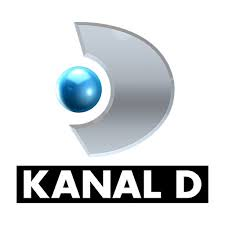
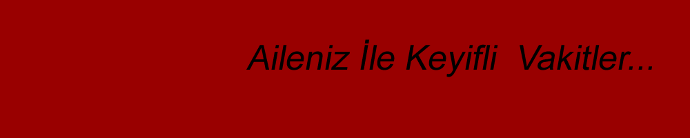

Kanal D, Aydın Doğan'ın sahibi olduğu Doğan Holding'in Türkiye'de yayın yapan ulusal televizyon kanallarından biridir. Tüm Türkiye'ye yayın yapan ulusal kanal, genelde dizi filmleriyle ön plana çıkmıştır ve 84 yerli ve 13 yabancı dizi ile, 93 yerli ve 9 yabancı dizi yayınlamış Show TV'den sonra en çok sayıda televizyon dizisi yayınlamış Türk televizyon kanalıdır. 2009 yılı itibarıyle Türkiye'de en çok izlenen kanal ünvanını elde etmiştir. Kanalın spor müdürü İlker Yasin'dir. Ayhan Şahenk ve Aydın Doğan tarafından ortak kurulmuştur. 16 Eylül 1993'te test yayınına ve 19 Aralık 1993'te başlamıştır. Kanalın hisseleri 16 Ekim 1994 tarihinde Aydın Doğan'a emanet verildi ve kanalın logosu değişerek bugünkü hâlini almıştır. 2004 yılında, analog yayının yanı sıra sayısal yayın yapmaya da başlamıştır. Diğer tüm Avrupa ülkelerine Türkçe yayın yapan Almanya merkezli Euro D kanalın Türkiye dışındaki şubesidir. Kanal D, ayrıca Türkiye'de yüksek çözünürlükle (HD) yayın yapan ilk ulusal televizyon kanalı olan Kanal D HD'yi yayına sokmuştur. Kanal D'de yayınlanan birçok program, bu kanaldan yüksek çözünürlükle izlenebilmektedir. 5 Eylül 2005'ten 16 Ocak 2013'e kadar Kanal D Ana Haber Bülteni'ni hafta içi Mehmet Ali Birand sunmuştur. 3 Kasım 2014'ten beri Kanal D Ana Haber Bülteni'ni hafta içi Cüneyt Özdemir, hafta sonu ise Serdar Cebe sunmaktadır. Spor Gündemi'ni Hafta İçi Emre Tilev, Hafta sonu ise Gökhan Telkenar sunmaktadır. 32. Gün programını her Perşembe gecesi Mehmet Ali Birand sunmuştur. Sihirli Annem, Yaprak Dökümü, Fatmagül'ün Suçu Ne?, Kuzey Güney, İntikam, Kavak Yelleri, Aşk-ı Memnu, Hanımın Çiftliği, Öyle Bir Geçer Zaman ki gibi Kanal D'nin en çok beğenilen dizileri arasında yer almıştır. Kanal D 2005 yılından itibaren her yıl Türkiye'nin en çok izlenilen kanalı durumundadır.[kaynak belirtilmeli]
Kanal, 20 Nisan 2011'de logosunu üç boyutlu yapmış ve logonun ortasındaki daire dönen bir küre olmuştur. Mayıs 2013'ten itibaren Kanal D dizileri engelsiz.kanald.com.tr adresinde görme engelliler için sesli betimleniyor, işitme engelliler için işaret dili ile anlatılıyor. Ayrıca altyazılarla destekleniyor.
Kanal D, 1 Temmuz 2013'te 16:9 geniş ekran yayına geçti.